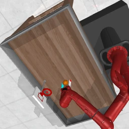
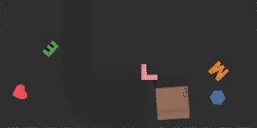
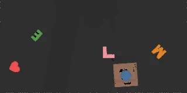

Branch from one state.
Execute each policy proposal from the same saved state. Record the immediate visual change and the branch outcome under the collection protocol.
World Action Model-augmented Cascaded Skills
for Vision-Language-Action Agent
Recorded MetaWorld simulation.
Animated paths illustrate the method.
Several actions can look plausible.
Their consequences can be very different.
EmbodiedSkills gives a frozen action policy a predictive decision layer. It anticipates the effects of candidate actions, compares their expected outcomes, and executes one original proposal.
Reusable skills connect perception, prediction and physical execution. The policy keeps its capabilities. The additional models learn how to choose.
Follow the decision loop ↓Cascaded stagesOne shared feedback loop
World action modelsIndependent consequence estimates
Original action selectedThe policy remains frozen
Observation becomes a proposal.
Prediction informs a choice.
Execution creates the next observation.

Scene + instruction + state
FROZEN POLICY · LEARNED CONSEQUENCESFrozen visual and language encoders turn the current scene and instruction into a shared context, alongside observable state and elapsed progress.
Each candidate passes through three independent world action models. Selection accounts for both their estimated outcomes and how consistently they predict the effect.
Outcome scores
Prediction disagreement
Predicted-effect agreement
Predict compact visual changes without rendering candidate futures during deployment.
Every alternative is compared against the frozen policy’s original proposal.
The members reuse pretrained features. Adaptation focuses on prediction and comparison.
Explore real CLIPort candidate branches.
Switch the task, then inspect each proposal.


Images are immediate post-action observations. Outcome labels describe the complete recorded branch; they are shown here for analysis and are not inputs to the selector.
The next decision begins where the last action left the robot. On MetaWorld, the selector receives a new observation after every executed chunk.
Frames replay the saved actions from successful episodes. Initial and final observations were checked against the recorded trajectories.
Continuous robot control, spatial manipulation
and long-horizon task chains.
50 manipulation tasks with a frozen π₀.₅ policy. The loop compares action chunks at each decision.
2,500 evaluation episodesSame frozen policy backbone; success is measured on the complete task.
| Benchmark | Frozen policy | Direct | EmbodiedSkills | Gain |
|---|---|---|---|---|
| MetaWorld MT50 | π₀.₅ | 76.28% | 78.64% | +2.36 pp |
| CLIPort | CLIPort | 33.94% | 36.83% | +2.89 pp |
| CALVIN | FLOWER | 77.10% | 77.90% | +0.80 pp |
Matched starting states provide comparable action outcomes. Learning is concentrated in the predictive and comparison modules.
Execute each policy proposal from the same saved state. Record the immediate visual change and the branch outcome under the collection protocol.
Train three independent WAMs with observed latent transitions and action-quality supervision. The spatial model warms up dynamics before joint training.
Freeze the WAMs and train the shared comparison head on joint outcomes. It estimates the benefit and risk of replacing the direct proposal.
Action policy, visual backbone and language encoder stay frozen.
Future observations and branch outcomes supervise training.
Defined inputs and outputs keep policy proposals, predicted effects and executed actions connected across backends.
@article{wang2026embodiedskills,
title={EmbodiedSkills: World Action Model-augmented Cascaded Skills
for Vision-Language-Action Agent},
author={Wang, Wei and Zhang, Wenqiao and Lin, Yutong and Yuan, Yuqian
and Lin, Tianwei and Mao, Jinhao and Fan, Zhenxuan
and Gao, Mingjian and Dai, Yang and Li, Wentong and Lv, Zheqi
and Dong, Zheng and Niu, Yingjie and Zhu, Jiaqi and Xiao, Jun
and Li, Chao and Zhuang, Yueting},
journal={arXiv preprint arXiv:2609.01281},
year={2026}
}